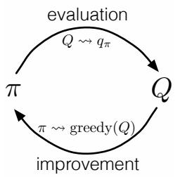

Reinforcement Learning
Lecture 12 — Monte Carlo Control & Online MC Implementation
Nishanth Koganti
VNR VJIET — M.Tech AI & DS
Today's Lecture
- Part A — From MC Prediction to MC Control
- Part B — Monte Carlo Control with Exploring Starts
- Part C — On-Policy Control without Exploring Starts (ε-greedy)
- Part D — Off-Policy Methods: A Brief Look
- Part E — Incremental & Online Implementation
buntyke.github.io/rlcourse-mtech-fall26
Acknowledgements
These slides are based on:
- Sutton & Barto — Reinforcement Learning: An Introduction (2nd ed.), Ch. 5.3–5.4, 5.6 (with §§5.5, 5.7 in brief)
- Figures 5.2 and 5.3, and the GPI diagram, reproduced from the textbook
buntyke.github.io/rlcourse-mtech-fall26
Part A — From MC Prediction to MC Control
Recap: What Monte Carlo Prediction Gave Us
- Estimate \(v_\pi\) or \(q_\pi\) by averaging sample returns — no model, no bootstrapping
- First-visit and every-visit MC both converge (law of large numbers)
- Without a model, action values \(q_\pi(s,a)\) are what we need
- The open snag: a deterministic policy never tries other actions → most \(q(s,a)\) are never seen
- Today: turn evaluation into optimisation — find \(\pi_*\)
Prediction vs Control in the Model-Free Setting
- Prediction: evaluate a fixed \(\pi\). Control: find the optimal \(\pi_*\)
- With a model, \(v_\pi\) suffices — one-step lookahead picks the best action
- Without a model, we cannot compute \(\arg\max_a \sum_{s',r} p(s',r|s,a)[\cdot]\)
- So estimate \(q_\pi(s,a)\) directly; then improve greedily: \(\pi'(s) = \arg\max_a q(s,a)\) — no model needed
Generalised Policy Iteration (GPI) Recap
- Two interacting processes: evaluation (make \(Q\) consistent with \(\pi\)) and improvement (make \(\pi\) greedy w.r.t. \(Q\))
- They pull against each other, yet together converge to \(\pi_*\) and \(q_*\)
- DP did evaluation with the Bellman equations (needs the model)
- MC keeps the schema but swaps evaluation for averaging returns — the only change

GPI: Evaluate ↔ Improve
Policy Improvement with Action Values
- Greedy policy from any \(q\): \(\pi(s) \doteq \arg\max_a q(s,a)\) — model-free
- The policy improvement theorem certifies the new policy is no worse:
\[ q_{\pi_k}\!\big(s,\pi_{k+1}(s)\big) = \max_a q_{\pi_k}(s,a) \;\ge\; q_{\pi_k}\!\big(s,\pi_k(s)\big) \;\ge\; v_{\pi_k}(s) \]
- Equality only when both are optimal → the chain drives \(\pi \to \pi_*\)
- This is why MC control works: greedy-on-\(Q\) is a guaranteed (weak) improvement
Part B — Monte Carlo Control with Exploring Starts
Removing the Two Assumptions: A Roadmap
- We cannot run infinitely many episodes, nor usually choose where episodes start
- Step 1: give up exact evaluation — interleave evaluation & improvement episode by episode
- Step 2: keep exploring starts for now → Monte Carlo ES
- Step 3 (Part C): remove exploring starts using soft (ε-greedy) policies
Giving Up Infinite Evaluation
- Even DP's policy evaluation only converges asymptotically — yet GPI still works
- We need not get exact \(q_{\pi_k}\); only move \(Q\) toward it before improving
- Extreme analogue: value iteration does one sweep per improvement
- For MC: alternate after each episode — update \(Q\) from its returns, then improve \(\pi\) at the visited states
Monte Carlo ES — Algorithm
Monte Carlo ES (Exploring Starts), for estimating π ≈ π*
Initialize: π(s) ∈ 𝒜(s) arbitrarily; Q(s,a) ∈ ℝ arbitrarily
Returns(s,a) ← empty list, for all s, a
Loop forever (for each episode):
Choose S₀ ∈ 𝒮, A₀ ∈ 𝒜(S₀) randomly, all pairs probability > 0
Generate an episode from S₀,A₀ following π: S₀,A₀,R₁,…,S_{T-1},A_{T-1},R_T
G ← 0
For t = T-1, T-2, …, 0:
G ← γG + R_{t+1}
Unless the pair S_t,A_t appears in S₀,A₀,…,S_{t-1},A_{t-1}:
Append G to Returns(S_t,A_t)
Q(S_t,A_t) ← average(Returns(S_t,A_t))
π(S_t) ← argmax_a Q(S_t,a)
Monte Carlo ES — Walking Through One Iteration
- Pick a random start pair \((S_0,A_0)\) — every pair has nonzero probability (exploring start)
- Roll out the episode following the current greedy \(\pi\)
- Sweep backward: \(G \leftarrow \gamma G + R_{t+1}\)
- On a first visit to \((s,a)\): append \(G\), set \(Q(s,a)\) = average, make \(\pi(s)\) greedy
- Evaluation and improvement are fused in one backward pass
Why Exploring Starts Are Needed
- A deterministic \(\pi\) visits only one action per state — other \(Q(s,a)\) never improve
- Exploring starts: every \((s,a)\) has nonzero probability of beginning an episode
- Guarantees every pair is visited infinitely often → all \(Q(s,a)\) can be estimated
- Practical only for simulated episodes where we control the start
Convergence of Monte Carlo ES
- All returns for each \((s,a)\) are averaged, regardless of the policy in force when observed
- MC ES cannot settle on a suboptimal policy: that would force the policy to keep changing
- Stability is reached only when both \(Q\) and \(\pi\) are optimal
- A formal proof remains a fundamental open question in RL (partial result: Tsitsiklis, 2002)
Part C — On-Policy Control without Exploring Starts
The Trouble with Exploring Starts
- We rarely control the starting pair when learning from real interaction
- The only general way to keep seeing all actions: have the agent itself keep selecting them
- Two families of solutions: on-policy and off-policy
- This part: an on-policy method that needs no exploring starts
On-Policy vs Off-Policy: The Key Distinction
- On-policy: evaluate and improve the same policy used to generate behaviour
- Off-policy: the behaviour policy that acts differs from the target policy being learned
- MC ES is on-policy (the policy improves, but it is the one acting)
- On-policy is simpler; off-policy is more general but higher-variance (Part D)
Soft and ε-Soft Policies
- Soft policy: \(\pi(a|s) > 0\) for all \(s, a\) — every action keeps some probability
- The policy is gradually shifted closer and closer to deterministic optimal, but never fully
ε-soft policy: \(\displaystyle \pi(a|s) \;\ge\; \frac{\varepsilon}{|\mathcal{A}(s)|}\quad\text{for all } s, a,\ \text{some } \varepsilon > 0 \)
- Guarantees continual exploration without any special starting conditions
- The "never zero" property is exactly what fixes the missing-\(Q\)-values problem
ε-Greedy Policies
- ε-greedy: with prob. \(1-\varepsilon\) act greedily; with prob. \(\varepsilon\) pick uniformly at random
- \(\pi(a|s) = \begin{cases} 1 - \varepsilon + \frac{\varepsilon}{|\mathcal{A}(s)|} & a = a^* \\[2pt] \frac{\varepsilon}{|\mathcal{A}(s)|} & a \ne a^* \end{cases}\)
- Among all ε-soft policies, ε-greedy is the one closest to greedy
- Familiar from bandits — now guaranteeing exploration across the whole MDP
On-Policy First-Visit MC Control — Algorithm
On-policy first-visit MC control (for ε-soft policies), estimates π ≈ π*
Algorithm parameter: small ε > 0
Initialize: π ← an arbitrary ε-soft policy
Q(s,a) ∈ ℝ arbitrarily; Returns(s,a) ← empty list
Repeat forever (for each episode):
Generate an episode following π: S₀,A₀,R₁,…,S_{T-1},A_{T-1},R_T
G ← 0
For t = T-1, …, 0:
G ← γG + R_{t+1}
Unless the pair S_t,A_t appears earlier in the episode:
Append G to Returns(S_t,A_t); Q(S_t,A_t) ← average(Returns(S_t,A_t))
A* ← argmax_a Q(S_t,a)
For all a ∈ 𝒜(S_t):
π(a|S_t) ← 1 - ε + ε/|𝒜(S_t)| if a = A*
π(a|S_t) ← ε/|𝒜(S_t)| if a ≠ A*
Why Move Only to ε-Greedy?
- Full greedy would set unvisited actions to probability 0 → exploration dies, \(Q\) gaps return
- GPI does not require going all the way to greedy — only toward it
- Moving to the ε-greedy policy w.r.t. \(q_\pi\) is enough to guarantee improvement
- We trade a little optimality for permanent exploration
Policy Improvement for ε-Soft Policies
- Let \(\pi'\) be ε-greedy w.r.t. \(q_\pi\). The policy improvement theorem applies because:
\[ q_\pi(s,\pi'(s)) = \frac{\varepsilon}{|\mathcal{A}(s)|}\sum_a q_\pi(s,a) + (1-\varepsilon)\max_a q_\pi(s,a) \;\ge\; v_\pi(s) \]
- The inequality holds because a max ≥ any weighted average
- Therefore \(v_{\pi'}(s) \ge v_\pi(s)\) for all \(s\) — improvement on every step
- Equality only when \(\pi\) is optimal among ε-soft policies
What On-Policy ε-Soft Control Achieves
- Converges to the best policy among ε-soft policies — not necessarily the true \(\pi_*\)
- The price of permanent exploration: a small, fixed amount of randomness remains
- But we have eliminated exploring starts — practical for real experience
- Shrinking \(\varepsilon\) over time can recover near-optimality (common heuristic)
Part D — Off-Policy Methods: A Brief Look
The Learning Dilemma
- We want to learn the value of acting optimally, yet must act non-optimally to explore
- On-policy's answer is a compromise: learn a near-optimal policy that still explores
- Off-policy's answer: use two policies — one to act (explore), one to learn (the optimum)
- Cleanly separates "how we behave" from "what we learn"
Target and Behaviour Policies
- Target policy \(\pi\): the one we learn about — may be deterministic / greedy
- Behaviour policy \(b\): generates the data — must be soft / exploratory
- Coverage: \(\pi(a|s) > 0 \Rightarrow b(a|s) > 0\) — \(b\) can take any action \(\pi\) might
- On-policy is the special case \(\pi = b\)
Importance Sampling: The Core Idea
- Returns from \(b\) have the wrong expectation: \(\mathbb{E}[G_t|S_t=s] = v_b(s)\), not \(v_\pi(s)\)
- Reweight each return by the importance-sampling ratio:
\(\rho_{t:T-1} = \prod_{k=t}^{T-1}\frac{\pi(A_k|S_k)}{b(A_k|S_k)}\)
- The unknown MDP dynamics cancel — the ratio depends only on the policies
- After reweighting: \(\mathbb{E}[\rho_{t:T-1}\,G_t \mid S_t=s] = v_\pi(s)\)
Part E — Incremental & Online Implementation
Why Incremental Implementation?
- Storing every return costs \(O(n)\) memory per pair and recomputes the mean each time
- Keep just a running mean and a count, updated once per new return
- Same trick as the bandit sample-average update (Ch. 2) — now averaging returns
- Updates happen episode by episode
Incremental MC: Sample-Average Update
\[ Q_{n+1}(s,a) = Q_n(s,a) + \frac{1}{n}\big[\,\underbrace{G_n}_{\text{target}} - \underbrace{Q_n(s,a)}_{\text{estimate}}\,\big] \]
- The bracket \([G_n - Q_n]\) is an error; \(\tfrac{1}{n}\) is the step size
- For non-stationary problems (a changing policy), use a fixed step size \(\alpha\):
\(Q(s,a) \leftarrow Q(s,a) + \alpha[G - Q(s,a)]\)
- Same "target − estimate" pattern as bandits — and it reappears in TD next lecture
Incremental Weighted Importance Sampling
- Weighted averages need a different rule: track the cumulative weight \(C\)
\[ V_{n+1} = V_n + \frac{W_n}{C_n}\big[G_n - V_n\big], \qquad C_{n+1} = C_n + W_{n+1}, \quad C_0 = 0 \]
- Setting \(W \equiv 1\) recovers the ordinary sample-average update (the on-policy case)
- One unified update covers both on-policy and off-policy evaluation
- \(W_n/C_n\) acts as an effective step size
Off-Policy MC Prediction — Incremental Algorithm
Off-policy MC prediction (policy evaluation), estimating Q ≈ q_π
Input: target policy π
Initialize, for all s, a: Q(s,a) ∈ ℝ arbitrarily; C(s,a) ← 0
Loop forever (for each episode):
b ← any policy with coverage of π
Generate an episode following b: S₀,A₀,R₁,…,S_{T-1},A_{T-1},R_T
G ← 0; W ← 1
For t = T-1, …, 0, while W ≠ 0:
G ← γG + R_{t+1}
C(S_t,A_t) ← C(S_t,A_t) + W
Q(S_t,A_t) ← Q(S_t,A_t) + (W / C(S_t,A_t)) [G - Q(S_t,A_t)]
W ← W · π(A_t|S_t) / b(A_t|S_t)
- Same box doubles as on-policy evaluation when \(\pi = b\) (then \(W = 1\))
Q1 — ε-Greedy Probabilities
Question
A state has \(|\mathcal{A}(s)| = 4\) actions and we use an ε-greedy policy with \(\varepsilon = 0.2\).
What probability does the greedy action \(a^*\) receive?
A. 0.85 B. 0.80 C. 0.95 D. 0.05
↓ Press down for answer
Q1 — ε-Greedy Probabilities
Question
A state has \(|\mathcal{A}(s)| = 4\) actions and we use an ε-greedy policy with \(\varepsilon = 0.2\).
What probability does the greedy action \(a^*\) receive?
A. 0.85 B. 0.80 C. 0.95 D. 0.05
Answer: A — 0.85
\(\pi(a^*|s) = 1 - \varepsilon + \varepsilon/|\mathcal{A}| = 0.8 + 0.05 = 0.85\). Each other action: \(\varepsilon/|\mathcal{A}| = 0.05\).
Check: \(0.85 + 3(0.05) = 1.0\). ✓
Q2 — MC ES vs On-Policy ε-Greedy
Question
On-policy first-visit MC control (ε-soft) converges to which policy?
A. The true optimal \(\pi_*\)
B. The best policy among ε-soft policies
C. A uniformly random policy
D. It does not converge
↓ Press down for answer
Q2 — MC ES vs On-Policy ε-Greedy
Question
On-policy first-visit MC control (ε-soft) converges to which policy?
A. The true optimal \(\pi_*\)
B. The best policy among ε-soft policies
C. A uniformly random policy
D. It does not converge
Answer: B
Permanent exploration keeps a fixed randomness, so it reaches the best ε-soft policy. MC ES, by contrast, gets coverage from exploring starts, so it can go fully greedy and (empirically) reach the true \(\pi_*\).
Q3 — Importance-Sampling Ratio
Question
A 2-step trajectory from behaviour \(b\): \(b(A_0|S_0)=0.5,\ b(A_1|S_1)=0.25\).
Target \(\pi\) is deterministic greedy with \(\pi(A_0|S_0)=\pi(A_1|S_1)=1\). Compute \(\rho_{0:1}\).
A. 8 B. 0.125 C. 2 D. 1
↓ Press down for answer
Q3 — Importance-Sampling Ratio
Question
A 2-step trajectory from behaviour \(b\): \(b(A_0|S_0)=0.5,\ b(A_1|S_1)=0.25\).
Target \(\pi\) is deterministic greedy with \(\pi(A_0|S_0)=\pi(A_1|S_1)=1\). Compute \(\rho_{0:1}\).
A. 8 B. 0.125 C. 2 D. 1
Answer: A — 8
\(\rho_{0:1} = \frac{1}{0.5}\cdot\frac{1}{0.25} = 2 \times 4 = 8\). If instead \(\pi(A_1|S_1)=0\), then \(\rho = 0\) — the trajectory is inconsistent with \(\pi\) and contributes nothing.
Q4 — Ordinary vs Weighted IS
Question
Which statement about importance-sampling estimators is correct?
A. Ordinary IS is biased; weighted IS is unbiased
B. Ordinary IS is unbiased but high-variance; weighted IS is biased but lower-variance (preferred)
C. Both are unbiased with equal variance
D. Weighted IS has unbounded variance
↓ Press down for answer
Q4 — Ordinary vs Weighted IS
Question
Which statement about importance-sampling estimators is correct?
A. Ordinary IS is biased; weighted IS is unbiased
B. Ordinary IS is unbiased but high-variance; weighted IS is biased but lower-variance (preferred)
C. Both are unbiased with equal variance
D. Weighted IS has unbounded variance
Answer: B
Ordinary IS is unbiased but its variance can be huge (even infinite). Weighted IS has small (vanishing) bias and dramatically lower, always-finite variance — preferred in practice.
Q5 — Why MC Cannot Update Mid-Episode
Question
Using incremental MC on a 100-step episode, when can the first value update be made?
A. After the first step
B. After every step
C. Only after the episode terminates (needs the full return \(G\))
D. Never
↓ Press down for answer
Q5 — Why MC Cannot Update Mid-Episode
Question
Using incremental MC on a 100-step episode, when can the first value update be made?
A. After the first step
B. After every step
C. Only after the episode terminates (needs the full return \(G\))
D. Never
Answer: C
\(G_t\) needs all rewards up to termination. For a continuing task with no episode end, MC cannot form a target at all. TD removes this limit by bootstrapping — using \(V(S_{t+1})\) to update every step.
References
- Sutton & Barto (2018). Reinforcement Learning: An Introduction, 2nd ed., Ch. 5.3–5.4, 5.6.
- Tsitsiklis (2002). On the convergence of optimistic policy iteration. JMLR 3.
- Precup, Sutton & Dasgupta (2001). Off-policy temporal-difference learning with function approximation.
- Thorp (1966). Beat the Dealer — the basic blackjack strategy.
buntyke.github.io/rlcourse-mtech-fall26